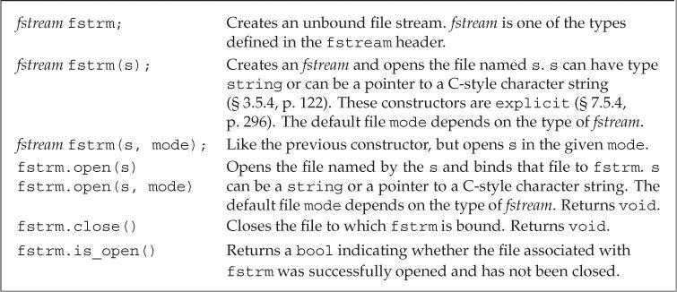

第8章 IO库
部分IO库设施：
istream：输入流类型，提供输入操作。ostream：输出流类型，提供输出操作。cin：istream对象，从标准输入读取数据。cout：ostream对象，向标准输出写入数据。cerr：ostream对象，向标准错误写入数据。>>运算符：从istream对象读取输入数据。<<运算符：向ostream对象写入输出数据。getline函数：从istream对象读取一行数据，写入string对象。
IO类（The IO Classes）
头文件iostream定义了用于读写流的基本类型，fstream定义了读写命名文件的类型，sstream定义了读写内存中string对象的类型。

宽字符版本的IO类型和函数的名字以w开始，如wcin、wcout和wcerr分别对应cin、cout和cerr。它们与其对应的普通char版本都定义在同一个头文件中，如头文件fstream定义了ifstream和wifstream类型。
可以将派生类的对象当作其基类的对象使用。
IO象无拷贝或赋值（No Copy or Assign for IO Objects）
不能拷贝或对IO对象赋值。
ofstream out1, out2;
out1 = out2; // error: cannot assign stream objects
ofstream print(ofstream); // error: can't initialize the ofstream parameter
out2 = print(out2); // error: cannot copy stream objects
由于IO对象不能拷贝，因此不能将函数形参或返回类型定义为流类型。进行IO操作的函数通常以引用方式传递和返回流。读写一个IO对象会改变其状态，因此传递和返回的引用不能是const的。
条件状态（Condition States）
IO库条件状态：
badbit表示系统级错误，如不可恢复的读写错误。通常情况下，一旦badbit被置位，流就无法继续使用了。在发生可恢复错误后，failbit会被置位，如期望读取数值却读出一个字符。如果到达文件结束位置，eofbit和failbit都会被置位。如果流未发生错误，则goodbit的值为0。如果badbit、failbit和eofbit任何一个被置位，检测流状态的条件都会失败。
while (cin >> word)
// ok: read operation successful...
good函数在所有错误均未置位时返回true。而bad、fail和eof函数在对应错误位被置位时返回true。此外，在badbit被置位时，fail函数也会返回true。因此应该使用good或fail函数确定流的总体状态，eof和bad只能检测特定错误。
流对象的rdstate成员返回一个iostate值，表示流的当前状态。setstate成员用于将指定条件置位（叠加原始流状态）。clear成员的无参版本清除所有错误标志；含参版本接受一个iostate值，用于设置流的新状态（覆盖原始流状态）。
// remember the current state of cin
auto old_state = cin.rdstate(); // remember the current state of cin
cin.clear(); // make cin valid
process_input(cin); // use cin
cin.setstate(old_state); // now reset cin to its old state
管理输出缓冲（Managing the Output Buffer）
每个输出流都管理一个缓冲区，用于保存程序读写的数据。导致缓冲刷新（即数据真正写入输出设备或文件）的原因有很多：
- 程序正常结束。
- 缓冲区已满。
- 使用操纵符（如
endl）显式刷新缓冲区。 - 在每个输出操作之后，可以用
unitbuf操纵符设置流的内部状态，从而清空缓冲区。默认情况下，对cerr是设置unitbuf的，因此写到cerr的内容都是立即刷新的。 - 一个输出流可以被关联到另一个流。这种情况下，当读写被关联的流时，关联到的流的缓冲区会被刷新。默认情况下，
cin和cerr都关联到cout，因此，读cin或写cerr都会刷新cout的缓冲区。
flush操纵符刷新缓冲区，但不输出任何额外字符。ends向缓冲区插入一个空字符，然后刷新缓冲区。
cout << "hi!" << endl; // writes hi and a newline, then flushes the buffer
cout << "hi!" << flush; // writes hi, then flushes the buffer; adds no data
cout << "hi!" << ends; // writes hi and a null, then flushes the buffer
如果想在每次输出操作后都刷新缓冲区，可以使用unitbuf操纵符。它令流在接下来的每次写操作后都进行一次flush操作。而nounitbuf操纵符则使流恢复使用正常的缓冲区刷新机制。
cout << unitbuf; // all writes will be flushed immediately
// any output is flushed immediately, no buffering
cout << nounitbuf; // returns to normal buffering
如果程序异常终止，输出缓冲区不会被刷新。
当一个输入流被关联到一个输出流时，任何试图从输入流读取数据的操作都会先刷新关联的输出流。标准库将cout和cin关联在一起，因此下面的语句会导致cout的缓冲区被刷新：
cin >> ival;
交互式系统通常应该关联输入流和输出流。这意味着包括用户提示信息在内的所有输出，都会在读操作之前被打印出来。
使用tie函数可以关联两个流。它有两个重载版本：无参版本返回指向输出流的指针。如果本对象已关联到一个输出流，则返回的就是指向这个流的指针，否则返回空指针。tie的第二个版本接受一个指向ostream的指针，将本对象关联到此ostream。
cin.tie(&cout); // illustration only: the library ties cin and cout for us
// old_tie points to the stream (if any) currently tied to cin
ostream *old_tie = cin.tie(nullptr); // cin is no longer tied
// ties cin and cerr; not a good idea because cin should be tied to cout
cin.tie(&cerr); // reading cin flushes cerr, not cout
cin.tie(old_tie); // reestablish normal tie between cin and cout
每个流同时最多关联一个流，但多个流可以同时关联同一个ostream。向tie传递空指针可以解开流的关联。
文件输入输出（File Input and Output）
头文件fstream定义了三个类型来支持文件IO：ifstream从给定文件读取数据，ofstream向指定文件写入数据，fstream可以同时读写指定文件。

使用文件流对象（Using File Stream Objects）
每个文件流类型都定义了open函数，它完成一些系统操作，定位指定文件，并视情况打开为读或写模式。
创建文件流对象时，如果提供了文件名（可选），open会被自动调用。
ifstream in(ifile); // construct an ifstream and open the given file
ofstream out; // output file stream that is not associated with any file
在C++11中，文件流对象的文件名可以是string对象或C风格字符数组。旧版本的标准库只支持C风格字符数组。
在要求使用基类对象的地方，可以用继承类型的对象代替。因此一个接受iostream类型引用或指针参数的函数，可以用对应的fstream类型来调用。
可以先定义空文件流对象，再调用open函数将其与指定文件关联。如果open调用失败，failbit会被置位。
对一个已经打开的文件流调用open会失败，并导致failbit被置位。随后试图使用文件流的操作都会失败。如果想将文件流关联到另一个文件，必须先调用close关闭当前文件，再调用clear重置流的条件状态（close不会重置流的条件状态）。
当fstream对象被销毁时，close会自动被调用。
文件模式（File Modes）
每个流都有一个关联的文件模式，用来指出如何使用文件。

- 只能对
ofstream或fstream对象设定out模式。 - 只能对
ifstream或fstream对象设定in模式。 - 只有当
out被设定时才能设定trunc模式。 - 只要
trunc没被设定，就能设定app模式。在app模式下，即使没有设定out模式，文件也是以输出方式打开。 - 默认情况下，即使没有设定
trunc，以out模式打开的文件也会被截断。如果想保留以out模式打开的文件内容，就必须同时设定app模式，这会将数据追加写到文件末尾；或者同时设定in模式，即同时进行读写操作。 ate和binary模式可用于任何类型的文件流对象，并可以和其他任何模式组合使用。- 与
ifstream对象关联的文件默认以in模式打开，与ofstream对象关联的文件默认以out模式打开，与fstream对象关联的文件默认以in和out模式打开。
默认情况下，打开ofstream对象时，文件内容会被丢弃，阻止文件清空的方法是同时指定app或in模式。
流对象每次打开文件时都可以改变其文件模式。
ofstream out; // no file mode is set
out.open("scratchpad"); // mode implicitly out and trunc
out.close(); // close out so we can use it for a different file
out.open("precious", ofstream::app); // mode is out and app
out.close();
string流（string Streams）
头文件sstream定义了三个类型来支持内存IO：istringstream从string读取数据，ostringstream向string写入数据，stringstream可以同时读写string的数据。

使用istringstream（Using an istringstream）
// members are public by default
struct PersonInfo
{
string name;
vector<string> phones;
};
string line, word; // will hold a line and word from input, respectively
vector<PersonInfo> people; // will hold all the records from the input
// read the input a line at a time until cin hits end-of-file (or another error)
while (getline(cin, line))
{
PersonInfo info; // create an object to hold this record's data
istringstream record(line); // bind record to the line we just read
record >> info.name; // read the name
while (record >> word) // read the phone numbers
info.phones.push_back(word); // and store them
people.push_back(info); // append this record to people
}
使用ostringstream（Using ostringstreams）
for (const auto &entry : people)
{ // for each entry in people
ostringstream formatted, badNums; // objects created on each loop
for (const auto &nums : entry.phones)
{ // for each number
if (!valid(nums))
{
badNums << " " << nums; // string in badNums
}
else
// ''writes'' to formatted's string
formatted << " " << format(nums);
}
if (badNums.str().empty()) // there were no bad numbers
os << entry.name << " " // print the name
<< formatted.str() << endl; // and reformatted numbers
else // otherwise, print the name and bad numbers
cerr << "input error: " << entry.name
<< " invalid number(s) " << badNums.str() << endl;
}